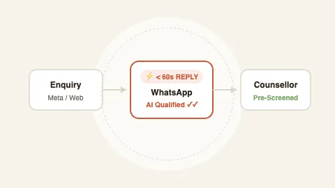
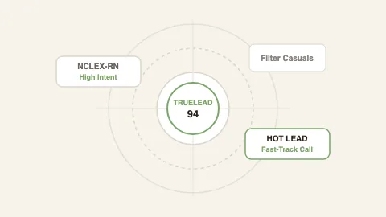
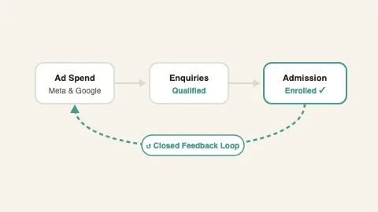
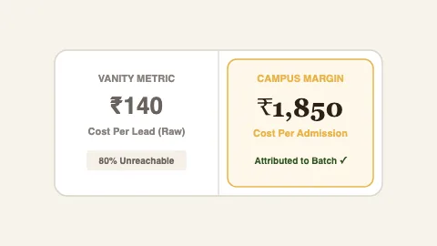
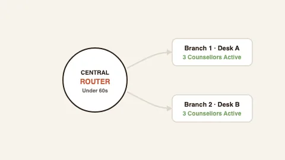
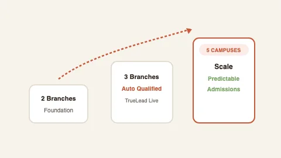

Why 80% of Coaching Enquiries Go Cold Within 15 Minutes
The arithmetic of speed-to-lead and why manual calling guarantees high acquisition costs.
Placeholder — publishes with first post
We build the system that qualifies every enquiry before it’s dialled, replies on WhatsApp in under 60 seconds, and tells you which campaign actually produced an admission.
Watch the physical path every student follows through TrueLead, WhatsApp, and your counselling team.
Meta ad lead arrives
Hot / Warm / Cold scored
Top 20% routed to team
Concierge replies 24/7
Enrolment confirmed
Algorithm learns payers
Tap your biggest bottleneck. See the exact mechanism we build to fix it.
Scores every enquiry before a counsellor sees it — hot, warm, cold — using TrueLead, our own AI scoring engine.
Replies on WhatsApp in under 60 seconds, 24/7, in Hindi or English, then follows up until the student answers or opts out.
Pushes real admissions back to Meta, so the algorithm finds more students who enrol — not more who fill forms.
Gives your team one dashboard they open every morning: enquiries → contacted → interested → enrolled, by campaign, by counsellor.
Running for NCLEX-RN today · built to configure for IELTS, NEET and study-abroad intakes.
This isn’t a plan. It’s running right now for a multi-course nursing coaching institute — every enquiry from Meta, Instagram DMs and the website flows through the same engine, and an eight-person counselling team works only from the scored list.
Hi, enquiry about NCLEX nursing batch
9:02 PMSat Sri Akal Simran ji! Which country intake are you planning for?
9:02 PM ✓✓Canada, completed B.Sc Nursing
9:03 PMGreat! Sharing syllabus & fee structure. Counsellor calling at 10 AM.
9:03 PM ✓✓Each enquiry is read by TrueLead and tagged hot, warm or cold with the reason — course, destination country, city, qualification.
WhatsApp reply fires automatically, day or night, in the student’s language.
When a student enrols, Meta learns what an enrolling student looks like — so the next campaign finds more of them.
Counsellors, owner and TGL look at the same live tracker: who called whom, when, and what happened.
“[ARCHITECT TO CONFIRM: Founder statement on why TGL exists]”
2 minutes. Eleven honest questions, not a 47-field form.
45 minutes. We audit your funnel live: your ads, your form, your response time (we’ll submit a test enquiry during the call).
Within 48 hours. Where enquiries should come from, what’s leaking, the exact system we’d build. If we’re not the right fit, the plan is still yours.
We don’t take on every institute. Here’s how to tell before you apply.

The arithmetic of speed-to-lead and why manual calling guarantees high acquisition costs.

How TrueLead separates casual form-fillers from high-intent nursing and IELTS candidates.

The missing feedback loop between your admissions counter and your ad account.

Why vanity CPL targets blind multi-branch coaching directors to true campus margins.

What happens to staff retention when counsellors only speak with pre-qualified students.

Centralised enquiry routing vs decentralized branch desks — lessons from the field.
Founding-client structure: ₹50,000/month plus a one-time installation fee, 90-day minimum, step-up from month 7. Stated upfront because it filters — we’d rather you know now.
First qualified enquiries within 10 days of launch. First attribution report — which campaign produced which admissions — within 30 days.
Ad account access, one person who owns follow-up, and your last three months of enquiry and admission counts.
We run them. You see every rupee and every lead in a dashboard you can open any morning.
The system is the same; the creative, the scoring rules and the WhatsApp follow-ups are built per course. It’s live for nursing today; the roadmap call is where we check fit for yours.
Our own AI engine that reads every enquiry and scores it before anyone calls. We built it because off-the-shelf tools count leads; we needed something that judges them.
15 days to decide — if it doesn’t feel right we refund 50% of the advance. No lock-in after the first 90 days. Your data is your data.
No payment. No commitment. Just eleven answers and a plan built for your institute.